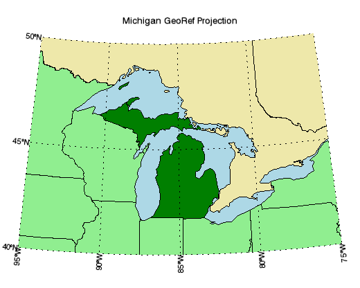

The MAP function displays map data in a graphics window.

The following lines create the map shown at the top of this topic.
; Set up map projection, draw a grid
map = MAP('Hotine Oblique Mercator', $
ELLIPSOID='GRS1980', $
MERCATOR_SCALE=0.9996d, $
LIMIT=[40, -95, 50, -75], $
CENTER_LATITUDE=45.3091667d, $
HOM_AZIM_LONGITUDE=-86, $
HOM_AZIM_ANGLE=337.25556d, $
FALSE_EASTING=2546731.496d, $
FALSE_NORTHING=-4354009.816d, $
FILL_COLOR="light_blue", $
TITLE="Michigan GeoRef Projection")
; Change some grid properties.
grid = map.MAPGRID
grid.LINESTYLE = "dotted"
grid.LABEL_POSITION = 0
grid.FONT_SIZE=14
; Insert some shapes.
m1 = MAPCONTINENTS(/USA, $
FILL_COLOR="light green", COMBINE=0)
m2 = MAPCONTINENTS(/CANADA, $
FILL_COLOR="pale goldenrod")
; Retrieve a shape and change its properties.
m = map['Michigan']
m.FILL_COLOR = "green"
See Map Examples for additional examples using the MAP function.
graphic = MAP( Projection , [, Map Properties = variable ] [, Map Grid Properties = variable ] [ Keywords = value ] [, Properties = variable ] )
Keywords are applied only during the initial creation of the graphic.
[, / BUFFER ] [, / CURRENT ] [, / DEVICE ] [, DIMENSIONS = array ] [, LAYOUT = array ] [, LOCATION = array ] [, MARGIN = array ] [, OVERPLOT =1 or variable ] [, POSITION = array ] [, WINDOW_TITLE = string ]
Properties can be set as keywords to the function during creation, or retrieved or changed using the "." notation after creation.
Note: Unlike other keywords in IDL, you cannot use an abbreviated form of the property name when setting them during creation. Instead, you must use the full property name.
BACKGROUND_COLOR , BACKGROUND_TRANSPARENCY , FONT_COLOR , FONT_NAME , FONT_SIZE , FONT_STYLE , MAPGRID , MAP_PROJECTION , NAME , TITLE , UVALUE , WINDOW , XRANGE , YRANGE
The MAP function returns a reference to the MapProjection object. Use the returned reference to manipulate the graphic after creation by changing properties or calling methods.
A string giving the name of the map projection. Available projections include:
|
Alaska Conformal Albers Equal Area Azimuthal Equidistant Cylindrical Equal Area Equidistant Conic Equirectangular Geographic Gnomonic Hammer Hotine Oblique Mercator Integerized Sinusoidal |
Interrupted Goode Interrupted Mollweide Lambert Azimuthal Lambert Conformal Conic Mercator Miller Cylindrical Mollweide Near Side Perspective Oblated Equal Area Orthographic Polar Stereographic |
Polyconic Robinson Sinusoidal Space Oblique Mercator State Plane Stereographic Transverse Mercator UTM Van der Grinten Wagner IV Wagner VII |
Each of the above map projections requires other properties to define the projection. These properties can be set during creation, or retrieved or changed after creation. The following properties are available:
|
CENTER_LATITUDE CENTER_LONGITUDE ELLIPSOID FALSE_EASTING FALSE_NORTHING HEIGHT HOM_AZIM_ANGLE HOM_AZIM_LONGITUDE HOM_LATITUDE1 HOM_LATITUDE2 HOM_LONGITUDE1 |
HOM_LONGITUDE2 IS_JUSTIFY IS_ZONES LIMIT MERCATOR_SCALE OEA_ANGLE OEA_SHAPEM OEA_SHAPEN SEMIMAJOR_AXIS SEMIMINOR_AXIS SOM_FLAG |
SOM_INCLINATION SOM_LANDSAT_NUMBER SOM_LANDSAT_PATH SOM_LONGITUDE SOM_PERIOD SOM_RATIO SPHERE_RADIUS STANDARD_PAR1 STANDARD_PAR2 STANDARD_PARALLEL TRUE_SCALE_LATITUDE ZONE |
See the table of GCTP map projections within the MAP_PROJ_INIT function for descriptions of these properties.
The following map graticule (grid) properties are available during creation:
|
BOX_ANTIALIAS BOX_AXES BOX_COLOR BOX_THICK CLIP COLOR FILL_COLOR FONT_NAME FONT_SIZE FONT_STYLE |
GRID_LATITUDE GRID_LONGITUDE HIDE LABEL_ALIGN LABEL_ANGLE LABEL_COLOR LABEL_FILL_BACKGROUND LABEL_FILL_COLOR LABEL_FORMAT LABEL_POSITION |
LABEL_SHOW LABEL_VALIGN LATITUDE_MAX LATITUDE_MIN LINESTYLE LONGITUDE_MAX LONGITUDE_MIN THICK TRANSPARENCY ZVALUE |
After creation, these properties can be retrieved or set on the MapGrid object, which can be accessed by using the MAPGRID property. See the MAPGRID function for details.
Keywords are applied only during the initial creation of the graphic.
Set this keyword to 1 to direct the graphics to an off-screen buffer instead of creating a window.
Set this keyword to create the graphic in the current window. If no window exists, a new window is created. The WINDOW's SetCurrent method may be used to set the current window.
Set this keyword if values are specified in device coordinates (pixels) for the MARGIN and POSITION keywords. (Normalized coordinates are the default for these properties.)
Set this keyword to a two-element vector of the form [ width , height ] to specify the window dimensions in pixels. If you do not specify a value for DIMENSIONS, IDL by default uses the values of the IDL_GR_WIN_HEIGHT and IDL_GR_WIN_WIDTH preferences for Windows platforms or the IDL_GR_X_HEIGHT and IDL_GR_X_WIDTH preferences for X Windows systems on UNIX.
Set this keyword to a three-element vector [ ncol , nrow , index ] that arranges graphics in a grid. The first dimension ncol is the number of columns in the grid, nrow is the number of rows, and index is the grid position at which to place the graphic (starting at element 1). This keyword is ignored if either OVERPLOT or POSITION is specified.
Set this keyword to a two-element vector [ X offset , Y offset ] giving the window's screen offset in pixels.
Set this keyword to the current graphic’s margin values in the layout specified by the LAYOUT property. Use a scalar value to set the same margin on all sides, or use a four-element vector [ left , bottom , right , top ] to specify different margins on each side.
By default, margin values are expressed in normalized units ranging from 0.0 to 0.5. If the DEVICE keyword is set, the values are given in device units (pixels).
This keyword is ignored if either OVERPLOT or POSITION is specified.
Set this keyword to 1 (one) to place the graphic on top of the existing graphic in the current window. If no current window exists, a new window is created.
Set this keyword to an existing IDL Graphic reference to direct the new graphic to the window specified by the provided IDL Graphic reference.
Set this keyword to a four-element vector that determines the location of the visualization within the graphic window. The coordinates x 0 , y 0 represent the lower left and x 1 , y 1 represent the upper right corners of the data space. Coordinates are expressed in normalized units ranging from 0.0 to 1.0. If the DEVICE keyword is set, the units are given in device units (pixels).
Note: When using POSITION, factor in enough space to display the title and axis labels. For example, if you use POSITION to place your visualization at 0 on the X or Y axis, any labels for that axis will not be visible.
Set this keyword to the title of the IDL Graphic window. The title is displayed in the window's title bar.
Set this property to a string or RGB vector indicating the graphic's background color. The default value is [255, 255, 255] (white). Set this property to a scalar value to remove the background color.
Tip: To set the background color of the entire window, retrieve the window object using the WINDOW property, and set the BACKGROUND_COLOR on the window object.
Set this property to an integer between 0 and 100 giving the percent transparency of the background color. The default is 100 (completely transparent).
Note: If the BACKGROUND_COLOR property is changed, and the current background transparency is 100, then the BACKGROUND_TRANSPARENCY will be automatically set to 0 (opaque) so that you can see the new color.
Set this property to a string or RGB vector that specifies the color of the title (if present). The default value is "black".
Set this property equal to a string specifying the IDL or system font for the title (if present). The default value is “Helvetica”.
Set this property equal to an integer specifying the font size for the title (if present). The default value is 16 points.
Set this property equal to an integer or a string specifying the font style for the title (if present). Allowed values are:
|
Integer |
String |
Resulting Style |
|
0 |
"Normal" or "rm" |
Default (roman) |
|
1 |
"Bold" or "bf" |
Bold |
|
2 |
"Italic" or "it" |
Italic |
|
3 |
"Bold italic" or "bi" |
Bold italic |
This property retrieves a reference to the existing MAPGRID object.
A string giving the name of the current map projection. After creation, use this property to retrieve or set the current map projection.
A string that specifies the name of the graphic. The name can be used to retrieve the graphic using the brackets array notation. If NAME is not set then a default name is chosen based on the graphic type.
Set this property to a string specifying a title. The title properties may be modified using FONT_COLOR, FONT_NAME, FONT_SIZE, and FONT_STYLE. After creation the TITLE property may be used to retrieve a reference to the title text object, and the TEXT properties may be used to modify the title object.
You can also add Greek letters and mathematical symbols using a TeX-like syntax. These symbols need to be enclosed within a pair of "$" characters. See Adding Mathematical Symbols and Greek Letters to the Text String for details on the available symbols.
Set this property to an IDL variable of any data type.
This property retrieves a reference to the WINDOW object which contains the graphic.
A two-element vector giving the X data range to plot. The default behavior is to plot the entire data range.
A two-element vector giving the Y data range to plot. The default behavior is to plot the entire data range.
|
8.0 |
Introduced |
|
8.1 |
Added the following properties: MAP_PROJECTION, MAPGRID, UVALUE, WINDOW. Added the following methods: Delete, MapForward, MapInverse. |
| 8.2 | Added BACKGROUND_COLOR, BACKGROUND_TRANSPARENCY, CLIP (Grid), LABEL_FORMAT (Grid) properties. |
CONTOUR , IMAGE , MAPCONTINENTS , MAPGRID , MAP_PROJ_INIT
MAP MAP MAP MAP MAP MAP MAP MAP MAP MAP MAP MAP MAP MAP MAP MAP MAP MAP MAP MAP MAP MAP MAP MAP MAP MAP MAP MAP MAP MAP MAP MAP MAP MAP MAP MAP MAP MAP MAP MAP MAP MAP MAP MAP MAP MAP MAP MAP MAP MAP MAP MAP MAP MAP MAP MAP MAP MAP MAP MAP MAP MAP MAP MAP MAP MAP MAP MAP MAP MAP MAP MAP MAP MAP MAP MAP MAP MAP MAP MAP MAP MAP MAP MAP MAP MAP MAP MAP MAP MAP MAP MAP MAP MAP MAP MAP MAP MAP MAP MAP MAP MAP MAP MAP MAP MAP MAP MAP MAP MAP MAP MAP MAP MAP MAP MAP MAP MAP MAP MAP MAP MAP MAP MAP MAP MAP MAP MAP MAP MAP MAP MAP MAP MAP MAP MAP MAP MAP MAP MAP MAP MAP MAP MAP MAP MAP MAP MAP MAP MAP MAP MAP MAP MAP MAP MAP MAP MAP MAP MAP MAP MAP MAP MAP MAP MAP MAP MAP MAP MAP MAP MAP MAP MAP MAP MAP MAP MAP MAP MAP MAP MAP MAP MAP MAP MAP MAP MAP MAP MAP MAP MAP MAP MAP MAP MAP MAP MAP MAP MAP MAP MAP MAP MAP MAP MAP MAP MAP MAP MAP MAP MAP MAP MAP MAP MAP MAP MAP MAP MAP MAP MAP MAP MAP MAP MAP MAP MAP MAP MAP MAP MAP MAP MAP MAP MAP MAP MAP MAP MAP MAP MAP MAP MAP MAP MAP MAP MAP MAP MAP MAP MAP MAP MAP MAP MAP MAP MAP MAP MAP MAP MAP MAP MAP MAP MAP MAP MAP MAP MAP MAP MAP MAP MAP MAP MAP MAP MAP MAP MAP MAP MAP MAP MAP MAP MAP MAP MAP MAP MAP MAP MAP MAP MAP MAP MAP MAP MAP MAP MAP MAP MAP MAP MAP MAP MAP MAP MAP MAP MAP MAP MAP MAP MAP MAP MAP MAP MAP MAP MAP MAP MAP MAP MAP MAP MAP MAP MAP MAP MAP MAP MAP MAP MAP MAP MAP MAP MAP MAP MAP MAP MAP MAP MAP MAP MAP MAP MAP MAP MAP MAP MAP MAP MAP MAP MAP MAP MAP MAP MAP MAP MAP MAP MAP MAP MAP MAP MAP MAP MAP MAP MAP MAP MAP MAP MAP MAP MAP MAP MAP MAP MAP MAP MAP MAP MAP MAP MAP MAP MAP MAP MAP MAP MAP MAP MAP MAP MAP MAP MAP MAP MAP MAP MAP MAP MAP MAP MAP MAP MAP MAP MAP MAP MAP MAP MAP MAP MAP MAP MAP MAP MAP MAP MAP